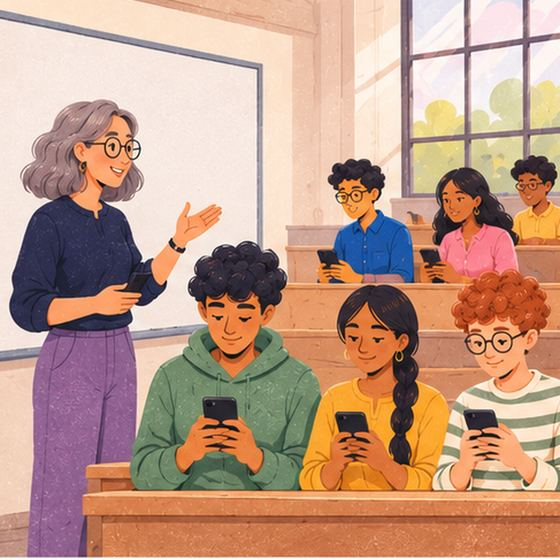
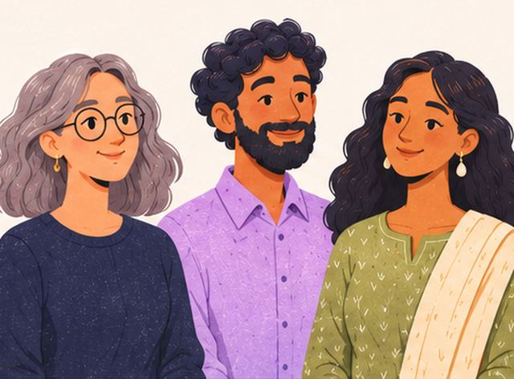
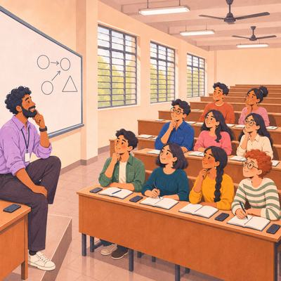
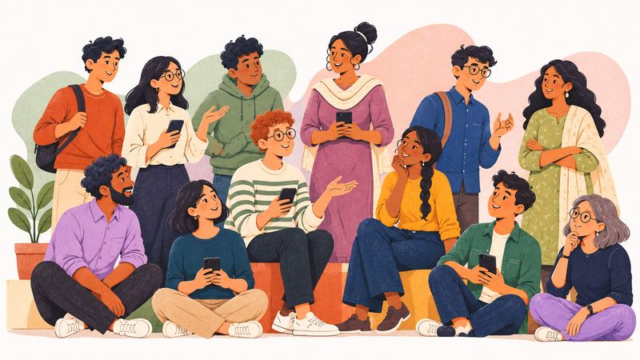

Saga: Of People, Through People
Know what your class understood before the next lecture.
A teacher-led classroom tool for colleges and universities in India · in development · preparing a first pilot

The exam tells a teacher too late, and too little.

Teaching is a feedback loop, and a loop is only as good as its measurement. In a typical college classroom in India, the main measurement is the exam.
Too late
Results arrive weeks after the lecture, when the class has moved on to the topics that depend on it.
Too little
A score: how many got it right.
Under pressure
A graded test measures performance under pressure.
Too many
One teacher faces a full lecture hall. No one can read every student's reasoning before the next lecture.
Too much
What there is to learn keeps growing; the semester does not. A teacher must cover more in the same hours, with less time to check what has landed.
And AI now writes the perfect answer. A finished assignment no longer shows that a student can reason, and leaning on AI can leave students less able to solve problems on their own. In a field experiment with about 1,000 high-school students, those who practised with an unguarded AI did better in practice, but scored 17% lower on a later exam without it than students who never had it.1
Bastani et al., “Generative AI without guardrails can harm learning”, PNAS, 2025.
One score, and the class's picture behind it
Saga is designed as a second measurement, with the opposite properties:
- When
- Evidence before the next lecture.
- What
- The reasoning: which mistaken ideas the class holds.
- Stakes
- What the student writes is never marked, and never read for attendance.
How a class will run
Before the lecture, the teacher certifies the questions. AI may draft them; the questions the teacher certifies bound everything students see.

In the lecture
Students reason for as long as the teacher sets, each on a phone. A dropped connection won't lose their work.
On the phone
A small AI model will read the reasoning, only inside the teacher's questions, and only once it has passed an accuracy test. Until it passes, no class picture is made.
Before the next lecture
The teacher will see the class's picture: what it understood, and which mistaken ideas held it back. Where the evidence is too thin, Saga will say so. The teacher decides what to change.
A sensor for the teacher, never a verdict on a student.
Their own skill map
Each session will add to a skill map that the student keeps on their own phone: what they showed, where they showed it, and what is not yet shown, topic by topic, and how that has changed over time. It shows evidence, never a verdict. It stays with them after college, and only they will be able to delete it.
The questions adapt to each student on their own phone, within the teacher's questions. What a student writes stays there.

Pilot Saga with us
We are preparing a first pilot. Once the model on the phone has passed its accuracy test, your teachers will see what each class understood before the next lecture. If your college would like to talk, write to us.
For investors
When AI writes the answer, a person's own progress is the record worth keeping.
Marks reward the answer, and AI now writes the answer. As machines take on more of the work of thinking, what stays a person's own is how they reason and how that reasoning has grown. One exam shows neither; many short observations over the years can.
Saga is being built for both sides of the classroom. The teacher will see how a class reasons, so the next lecture can meet it where it stands. The student will keep a record of their own progress on their own phone. No institution sees it and no one is ranked or scored, because a record stays honest only while no one judges with it.
Saga is in development, ahead of its first pilot. We believe every college and university will come to need this, and we are inviting a small circle of early backers who share that conviction to help shape it from its first classrooms. If that is you, we would welcome the conversation. Our plan and its numbers are shared privately, on request.